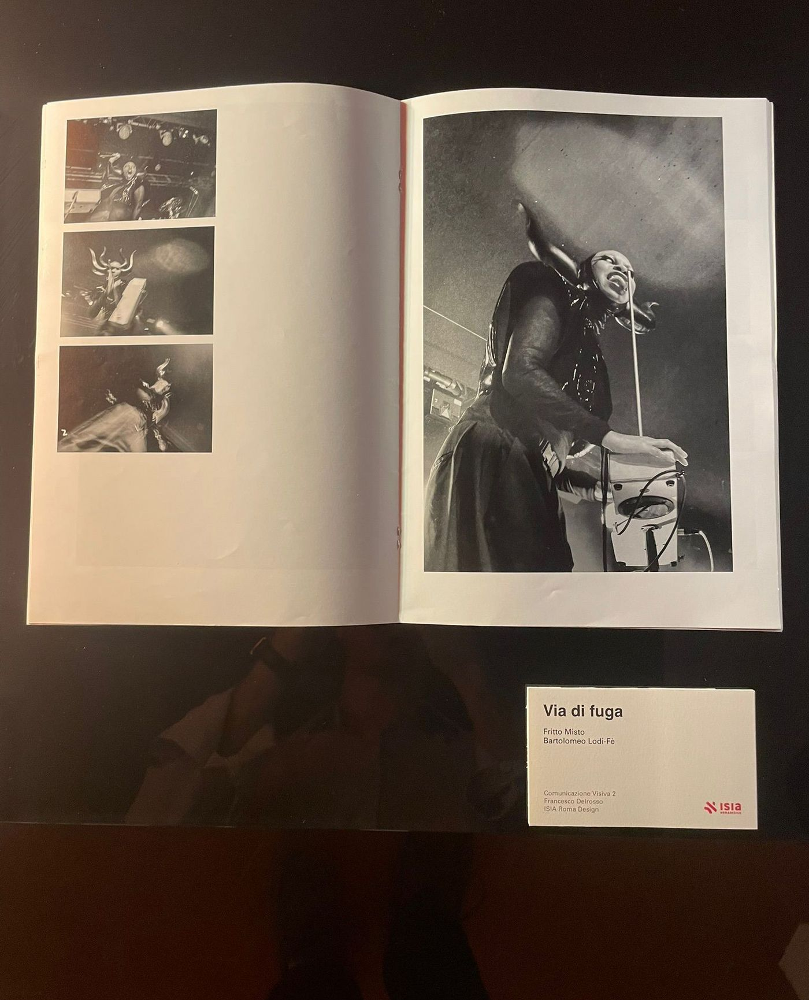
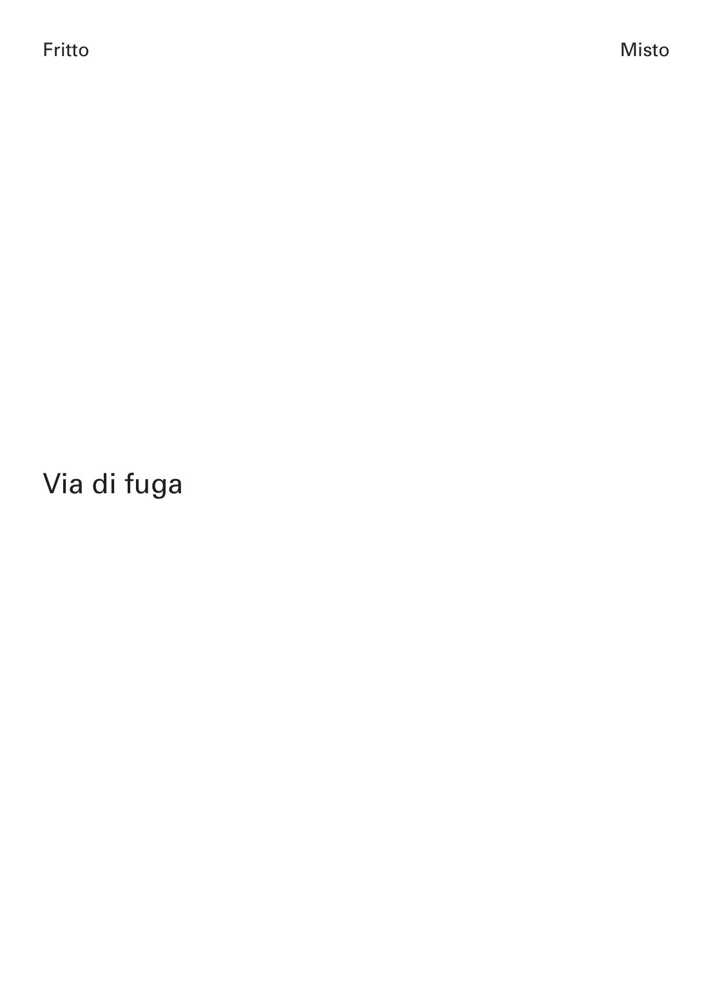
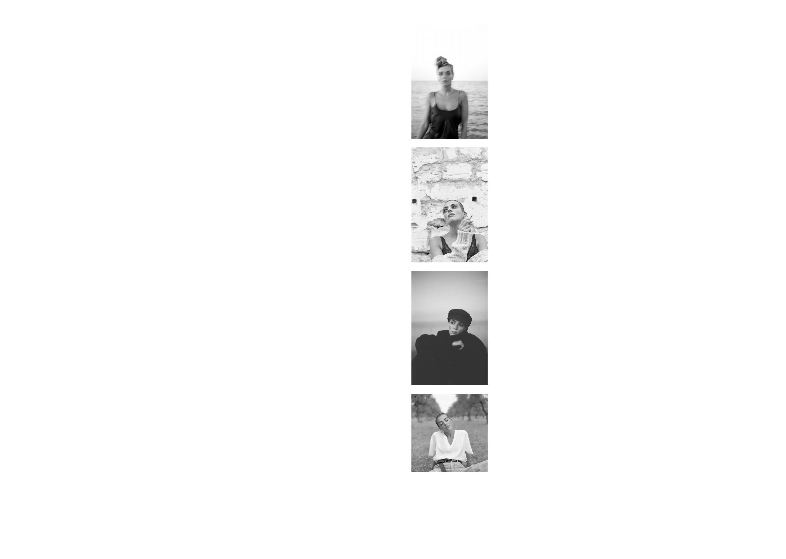
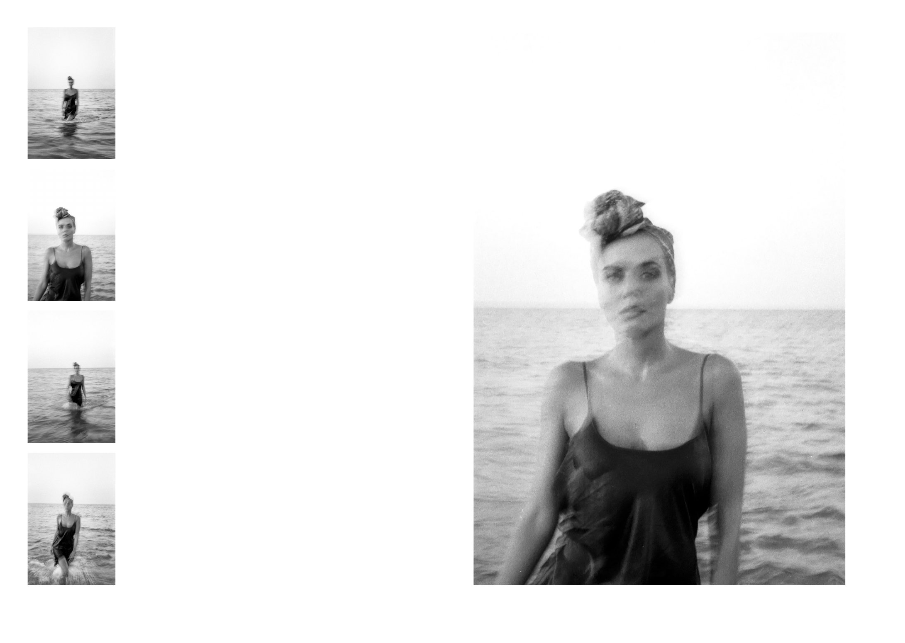
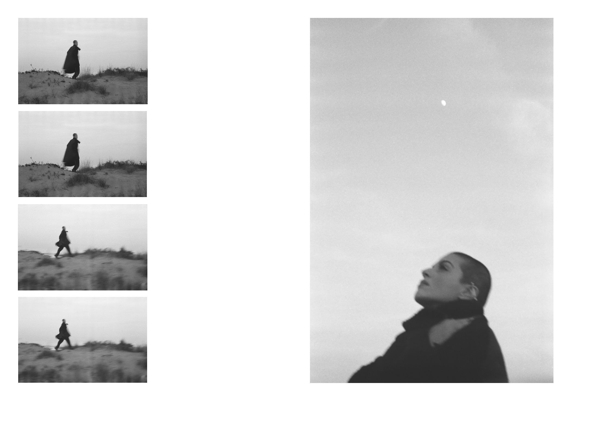

Via di Fuga
Mon projet éditorial : un fanzine sur le poids des regards, conçu pendant l’exercice Fritto Misto et présenté dans l’exposition qui en est née.
Glisser pour la tourner · molette pour zoomer · cliquer pour l’ouvrir
Le projet
Il raconte le changement émotionnel d’une femme face à une présence masculine. Au début, elle semble libre et sereine dans ses espaces, mais l’atmosphère change quand elle commence à se sentir regardée. Il n’y a pas de violence physique : ce qui émerge, c’est la fragilité née du poids des regards, qui devient peur et désir de fuite. Le récit se termine sur la solidarité féminine, seul refuge sûr et force pour retrouver sa liberté.


Fritto Misto
L’exercice et l’exposition.
Via di Fuga est né au sein de Fritto Misto, un exercice de Communication visuelle II devenu ensuite une exposition.
Un projet d’exposition imaginé par Francesco Delrosso : d’une archive commune naissent 41 récits autonomes, partageant la même matière visuelle mais développés par des démarches éditoriales indépendantes. Entre l’Italie et l’Angleterre, les images de Doronzo redonnent une place centrale aux histoires quotidiennes et marginales. Il en ressort un ensemble hétérogène de regards, où l’archive n’est pas un ensemble fermé mais un espace ouvert de possibilités narratives.

Le fanzine
Toutes les pages de Via di Fuga, de la couverture au dos. Cliquez pour agrandir.






